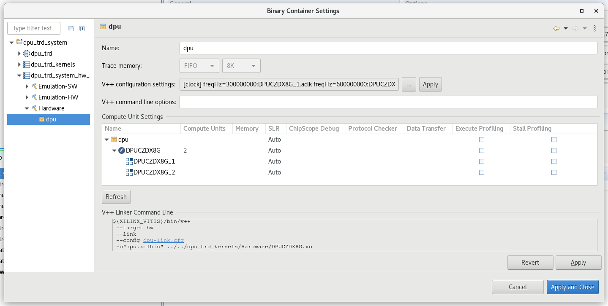

Step 3: Test the Platform¶
Test 1: Read Platform Info¶
With Vitis environment setup by step2, platforminfo tool can report XPFM platform information.
Click for detailed logs
# Run in zcu104_software_platform directory
platforminfo ./zcu104_custom/export/zcu104_custom/zcu104_custom.xpfm
==========================
Basic Platform Information
==========================
Platform: zcu104_custom
File: /group/bcapps/sven/project/WorkSpace/zcu104_software_platform/zcu104_custom/export/zcu104_custom/zcu104_custom.xpfm
Description:
zcu104_custom
=====================================
Hardware Platform (Shell) Information
=====================================
Vendor: xilinx
Board: zcu104_custom_platform
Name: zcu104_custom_platform
Version: 0.0
Generated Version: 2022.1.0
Hardware: 1
Software Emulation: 1
Hardware Emulation: 1
Hardware Emulation Platform: 0
FPGA Family: zynquplus
FPGA Device: xczu7ev
Board Vendor: xilinx.com
Board Name: xilinx.com:zcu104:1.1
Board Part: xczu7ev-ffvc1156-2-e
=================
Clock Information
=================
Default Clock Index: 2
Clock Index: 1
Frequency: 100.000000
Clock Index: 2
Frequency: 200.000000
Clock Index: 3
Frequency: 400.000000
==================
Memory Information
==================
Bus SP Tag: HP0
Bus SP Tag: HP1
Bus SP Tag: HP2
Bus SP Tag: HP3
Bus SP Tag: HPC0
Bus SP Tag: HPC1
=============================
Software Platform Information
=============================
Number of Runtimes: 1
Default System Configuration: zcu104_custom
System Configurations:
System Config Name: zcu104_custom
System Config Description: zcu104_custom
System Config Default Processor Group: linux_domain
System Config Default Boot Image: standard
System Config Is QEMU Supported: 1
System Config Processor Groups:
Processor Group Name: linux on psu_cortexa53
Processor Group CPU Type: cortex-a53
Processor Group OS Name: linux
System Config Boot Images:
Boot Image Name: standard
Boot Image Type:
Boot Image BIF: zcu104_custom/boot/linux.bif
Boot Image Data: zcu104_custom/linux_domain/image
Boot Image Boot Mode: sd
Boot Image RootFileSystem:
Boot Image Mount Path: /mnt
Boot Image Read Me: zcu104_custom/boot/generic.readme
Boot Image QEMU Args: zcu104_custom/qemu/pmu_args.txt:zcu104_custom/qemu/qemu_args.txt
Boot Image QEMU Boot:
Boot Image QEMU Dev Tree:
Supported Runtimes:
Runtime: OpenCL
We can verify clock information and memory information are set as expected.
Test 2: Run Vector Addition Application¶
Vector addition is the simplest acceleration PL kernel. Vitis can create this application automatically. Running this test can check the AXI control bus, memory interface and interrupt setting in platform are working properly.
Create a application directory
cd WorkSpace mkdir zcu104_application_vitisCreating Vector Addition Application
Switch Vitis workspace by selcting File -> Switch Workspace -> other -> Brose to the directory you created. Here is zcu104_application_vitis
Select File -> New -> Application Project.
Click next
Click add button and choose the folder of
zcu104_customwhich is located underzcu104_software_platformfolder.Select zcu104_custom as platform, click next.
Name the project vadd, click next.
Set Domain to linux on psu_cortexa53, set Sys_root path to
<full_pathname_to_zcu104_software_platform>/sysroots/cortexa72-cortexa53-xilinx-linux(as you created by running sdk.sh in Step2). Set the Root FS to rootfs.ext4 and Kernel Image to Image. These files are located inzcu104_software_platform/pfm/sw_compdirectory, which are prepared in Step 2. click next.Select System Optimization Examples -> Vector Addition and click finish to generate the application.
In the Explorer window double click the vadd.prj file to open it, change the Active Build configuration from Emulation-SW to Hardware.
Select vadd_system in Explorer window and Click Build icon in toolbar.
Note: If you’d like to test this application in emulation mode, plese change Active Build configuration from Emulation-SW to Emulation-HW on Step 8.
Running Vector Addition Application on the Board
Copy zcu104_application_vitis/vadd_system/Hardware/package/sd_card.img to local if Vitis is running on a remote server.
Write sd_card.img into SD Card with SD Card image writer applications like Etcher on Windows or dd on Linux.
Boot ZCU104 board with the SD card in SD boot mode.
Follow below steps to run the application if you are using common image from Xilinx Downloads website
Go to auto mounted FAT32 partition
cd /run/media/mmcblk0p1Run vadd application
./simple_vadd krnl_vadd.xclbin
It should show program prints and XRT debug info.
TEST PASSED
Follow below steps to run the application if you are using image from your Petalinux project
You will need to login with user
petalinuxfirst and setup a new password (it’s then also the sudo password):Log into the system
petalinux login:petalinux You are required to change your password immediately (administrator enforced). New password: Retype new password: petalinux:~$ sudo su We trust you have received the usual lecture from the local System Administrator. It usually boils down to these three things: #1) Respect the privacy of others. #2) Think before you type. #3) With great power comes great responsibility. Password: petalinux:/home/petalinux#
Go to auto mounted FAT32 partition
petalinux:/home/petalinux# cd /run/media/mmcblk0p1/
Run vadd application
./simple_vadd krnl_vadd.xclbin
It should show program prints and XRT debug info.
TEST PASSED
Test Vector Addition Application in Emulation Mode (Optional)
Use Vitis menu -> Xilinx -> Start/Stop Emulator to launch QEMU. Project is vadd, configuration is Emulation-HW. Click Start. Wait for Linux to boot. Log in with root/root.
Right click vadd project (not the vadd_system system project), select Run as -> Launch on Emulator
The result will show on Console tab.
Loading: './binary_container_1.xclbin' TEST PASSED
Fast Track for Vector Addition¶
Scripts are provided to create the test applications on the custom platform we created. To use these scripts, please run the following steps.
Run build
# cd to the step directory, e.g. cd step3_validate make all
The default verification uses hardware emulation. If you’d like to verify vadd application on hardware board, please run the following command to generate the SD card image.
cd step3_validate make vadd_hwTo clean the generated files, please run
make clean
Test 3: Run a Vitis-AI Demo¶
Note: Vitis AI for Vitis 2022.1 is not released. So we make this step gather up for the moment. We will update it to Vitis 2022.1 soon after Vitis AI for Vitis 2022.1 released.
Vitis-AI Demo
This test will run a Vitis-AI test application in DPU-TRD to verify DPU function on our custom platform. The most instructions below follows Vitis-AI DPU-TRD document.
Create the design¶
Add Vitis-AI repository into Vitis IDE
Launch Vitis IDE if you have not. We can reuse the workspace of vadd application.
Open menu Window -> Preferences
Go to Library Repository tab
Add Vitis-AI:
Click Add button
Input ID: vitis-ai
Name: Vitis AI
Location: assign a target download directory or keep empty. Vitis will use default path
~/.Xilinxif this field is empty.Git URL:
https://github.com/Xilinx/Vitis-AI.gitBranch: The branch you’d like to verify with your platform. Use
masterfor the Vitis-AI version that matches Vitis 2021.1. You can usemasterfor the latest patched version. Please note that the master branch will move forward. At some pointmasterbranch will point to a new release that not be compatible with Vitis 2021.2.

Download the Vitis-AI library
Open menu Xilinx -> Libraries
Find the Vitis-AI entry we just added. Click the Download button on it.
Wait until the download of Vitis-AI repository completes
Click OK to close this window.
Vitis IDE will check the upstream status of each repository. If there are updates, it will allow users to download the updates if the source URL is a remote Git repository.
Download Vitis-AI specific sysroot
Since Vitis-AI has a different release cycle with PetaLinux, Vitis-AI related PetaLinux recipes are released later than PetaLinux release. At the time that this tutorial releases, Vitis-AI related recipes are not released yet. We cannot build PetaLinux sysroot/sdk with Vitis-AI dependencies. We need to use pre-built Vitis-AI sdk.
Download the Vitis-AI cross compile environment setup script:
wget https://raw.githubusercontent.com/Xilinx/Vitis-AI/1.4/setup/mpsoc/VART/host_cross_compiler_setup.shUpdate the script for installation area. The default install path is
install_path=~/petalinux_sdk_2021.1. Since we are using PetaLinux 2021.2, it’s better to changeinstall_path=~/petalinux_sdk_2021.2.Run the script to setup cross compile environment:
./host_cross_compiler_setup.sh
Once Vitis-AI recipes are released, this tutorial will update the steps for building Vitis-AI dependencies to the sysroot using PetaLinux.
Create a Vitis-AI design on our zcu104_custom platform.
Go to menu File -> New -> Application Project
Click Next in Welcome page
Select platform zcu104_custom. Click Next.
Name the project dpu_trd, click next.
Set Domain to linux on psu_cortexa53, set Sys_root path to sysroot installation path in previous step, e.g.
~/petalinux_sdk_2021.2/sysroots/cortexa72-cortexa53-xilinx-linux/.Set the Root FS to rootfs.ext4 and Kernel Image to Image. These files are located in
zcu104_software_platform/sw_compdirectory, which are generated in Step 2. click next.Select dsa -> DPU Kernel (RTL Kernel) and click Finish to generate the application.

Update Build Target
Double click the system project file dpu_trd_system.sprj
Change Active Build Configuration to Hardware
Review and update DPU settings for ZCU104. The default created design has the DPU settings for ZCU102.
Open dpu_conf.vh from dpu_trd_kernels/src/prj/Vitis directory
Update line 37 from
URAM_DISABLEtoURAM_ENABLEPress Ctrl+S to save the changes.
Note: ZCU104 has ZU7EV device on board. It has less BRAM than ZU9EG on ZCU102 but it has URAM. Turning on URAM support can fulfill the on chip memory requirement by DPU.
Update system_hw_link for proper kernel instantiation
Since ZCU104 has less LUT resources than ZCU102, it’s hard to meet timing closure target if we include the softmax IP in PL like ZCU102. The implementation would take quite a long time. The Vitis-AI DPU-TRD design removes the softmax IP in hardware for ZCU104. When the host application detects no softmax IP in hardware, it will calculate softmax with software. The result will be identical but the calculation time will be different. Since our target is to verify the platform, we will remove the softmax kernel in our test application.
Double click dpu_trd_system_hw_link.prj.
In Hardware Functions window, remove sfm_xrt_top instance by right clicking it and select Remove.
After removing the sfx_xrt_top instance, the remaining instances in Hardware Functions window is DPUCZDX8G with Compute Units = 2.
Review system_hw_link v++ for proper kernel instantiation
The DPU kernel requires two phase aligned clocks, 1x clock and 2x clock. The configuration is stored in the example design. It sets up clock and AXI interface connections between the DPU kernel to the platform.
Here’s how to review the setup in the project.
Go to Assistant View
Double click dpu_trd_system [System]
Expand the left tree panel and find dpu_trd_system -> dpu_trd_system_hw_link -> Hardware -> dpu

Click
...button on the line of V++ Configuration Settings, it shows the configuration like this:[clock] freqHz=300000000:DPUCZDX8G_1.aclk freqHz=600000000:DPUCZDX8G_1.ap_clk_2 freqHz=300000000:DPUCZDX8G_2.aclk freqHz=600000000:DPUCZDX8G_2.ap_clk_2 [connectivity] sp=DPUCZDX8G_1.M_AXI_GP0:HPC0 sp=DPUCZDX8G_1.M_AXI_HP0:HP0 sp=DPUCZDX8G_1.M_AXI_HP2:HP1 sp=DPUCZDX8G_2.M_AXI_GP0:HPC0 sp=DPUCZDX8G_2.M_AXI_HP0:HP2 sp=DPUCZDX8G_2.M_AXI_HP2:HP3
Note: the contents will be written to dpu-link.cfg during build time and pass to v++ Linker command line.
Note: To customize the v++ link configuration, you can add contents in V++ configuration settings, or create your own configuration file and add
--config <your_config_file.cfg>to V++ Command Line Options field. If you need to use relative path for the configuration file, the base location isdpu_trd_system_hw_link/Hardwaredirectory.Update package options to add dependency models into SD Card
Double click dpu_trd_system.sprj
Click … button on Package options
Input
--package.sd_dir=../../dpu_trd/src/appClick OK
All contents in the --package.sd_dir assigned directory will be added to the FAT32 partition of the sd_card.img. We package samples and models for verification.
The dpu_trd in the path name is the application project name in this example. If your project name is different, please update the project name accordingly.
Build the hardware design
Select the dpu_trd_system system project
Click the hammer button to build the system project
The generated SD card image is located at dpu_trd_system/Hardware/package/sd_card.img.
Note: Please refer to Vitis-AI document for details about Vitis-AI project creation flow.
Run Application on Board¶
Write image to SD
Copy the sd_card.img to a local workstation or laptop with SD card readers.
Write the image to SD card with balena Etcher or similar tools
Boot the board
Insert the SD card to ZCU104
Set boot mode to SD boot
Connect USB UART cable
Power on the board. It should boot Linux properly in a minute.
Resize ext4 partition
Connect UART console if it’s not connected.
On the ZCU104 board UART console, run
df .to check current available disk size
root@petalinux:~# df . Filesystem 1K-blocks Used Available Use% Mounted on /dev/root 564048 398340 122364 77% /
Run
resize-part /dev/mmcblk0p2to resize the ext4 partition. You need to input Yes and **100% **for confirming the resize to utilize full of the rest of SD card.
root@petalinux:~# resize-part /dev/mmcblk0p2 /dev/mmcblk0p2 Warning: Partition /dev/mmcblk0p2 is being used. Are you sure you want to continue? parted: invalid token: 100% Yes/No? yes End? [2147MB]? 100% Information: You may need to update /etc/fstab. resize2fs 1.45.3 (14-Jul-2019) Filesystem at /dev/mmcblk0p2 is mounted on /media/sd-mmcblk0p2; o[ 72.751329] EXT4-fs (mmcblk0p2): resizing filesystem from 154804 to 1695488 blocks n-line resizing required old_desc_blocks = 1, new_desc_blocks = 1 [ 75.325525] EXT4-fs (mmcblk0p2): resized filesystem to 1695488 The filesystem on /dev/mmcblk0p2 is now 1695488 (4k) blocks long.
Check available size again to verify that the ext4 partition size is enlarged.
root@petalinux:~# df . -h Filesystem Size Used Available Use% Mounted on /dev/root 6.1G 390.8M 5.4G 7% /
Note: The available size would be different according to your SD card size.
Note: resize-part is a script we added in Step 2. It calls Linux utilities parted and resize2fs to extend the ext4 partition to take the rest of the SD card.
Copy dependency files to home folder
# Libraries root@petalinux:~# cp -r /mnt/sd-mmcblk0p1/app/samples/ ~ # Model root@petalinux:~# cp /mnt/sd-mmcblk0p1/app/model/resnet50.xmodel ~ # Host app root@petalinux:~# cp /mnt/sd-mmcblk0p1/dpu_trd ~ # Image to test root@petalinux:~# cp /mnt/sd-mmcblk0p1/app/img/bellpeppe-994958.JPEG ~
Run the application
root@petalinux:~# env LD_LIBRARY_PATH=samples/lib XLNX_VART_FIRMWARE=/mnt/sd-mmcblk0p1/dpu.xclbin ./dpu_trd bellpeppe-994958.JPEG
It would show bell pepper has the highest possibility.
score[945] = 0.992235 text: bell pepper, score[941] = 0.00315807 text: acorn squash, score[943] = 0.00191546 text: cucumber, cuke, score[939] = 0.000904801 text: zucchini, courgette, score[949] = 0.00054879 text: strawberry,
Here's the detailed prints
[ 196.247066] [drm] Pid 948 opened device
[ 196.250926] [drm] Pid 948 closed device
[ 196.254833] [drm] Pid 948 opened device
[ 196.258679] [drm] Pid 948 closed device
[ 196.269515] [drm] Pid 948 opened device
[ 196.273384] [drm] Pid 948 closed device
[ 196.277243] [drm] Pid 948 opened device
[ 196.281076] [drm] Pid 948 closed device
[ 196.285073] [drm] Pid 948 opened device
[ 196.288984] [drm] Pid 948 closed device
[ 196.293230] [drm] Pid 948 opened device
[ 196.297096] [drm] Pid 948 closed device
[ 196.300963] [drm] Pid 948 opened device
[ 196.307660] [drm] zocl_xclbin_read_axlf The XCLBIN already loaded
[ 196.307672] [drm] zocl_xclbin_read_axlf 1cdede23-0755-458e-8dac-7ef1b3845fa4 ret: 0
[ 196.317747] [drm] bitstream 1cdede23-0755-458e-8dac-7ef1b3845fa4 locked, ref=1
[ 196.325431] [drm] Reconfiguration not supported
[ 196.337206] [drm] bitstream 1cdede23-0755-458e-8dac-7ef1b3845fa4 unlocked, ref=0
[ 196.337361] [drm] Pid 948 opened device
[ 196.348581] [drm] Pid 948 closed device
[ 196.352580] [drm] Pid 948 opened device
[ 196.356638] [drm] bitstream 1cdede23-0755-458e-8dac-7ef1b3845fa4 locked, ref=1
[ 196.356659] [drm] Pid 948 opened device
[ 196.367712] [drm] Pid 948 closed device
[ 196.371560] [drm] Pid 948 opened device
[ 196.375507] [drm] bitstream 1cdede23-0755-458e-8dac-7ef1b3845fa4 locked, ref=2
[ 196.375539] [drm] Pid 948 opened device
[ 196.386590] [drm] Pid 948 closed device
[ 196.390439] [drm] Pid 948 opened device
[ 196.394331] [drm] bitstream 1cdede23-0755-458e-8dac-7ef1b3845fa4 locked, ref=3
[ 196.394822] [drm] Pid 948 opened device
[ 196.405867] [drm] Pid 948 closed device
[ 196.409717] [drm] Pid 948 opened device
score[945] = 0.992235 text: bell pepper,
score[941] = 0.00315807 text: acorn squash,
score[943] = 0.00191546 text:[ 196.413579] [drm] bitstream 1cdede23-0755-458e-8dac-7ef1b3845fa4 locked, ref=4
cucumber, cuke,
score[939] = 0.000904801 text: zucchini, co[ 197.997865] [drm] bitstream 1cdede23-0755-458e-8dac-7ef1b3845fa4 unlocked, ref=3
urgette,
score[949] = 0.00054879 text: strawberry,
[ 198.010569] [drm] Pid 948 closed device
[ 198.032534] [drm] bitstream 1cdede23-0755-458e-8dac-7ef1b3845fa4 unlocked, ref=2
[ 198.032546] [drm] Pid 948 closed device
[ 198.229797] [drm] bitstream 1cdede23-0755-458e-8dac-7ef1b3845fa4 unlocked, ref=0
[ 198.229803] [drm] Pid 948 closed device
[ 198.241056] [drm] bitstream 1cdede23-0755-458e-8dac-7ef1b3845fa4 unlocked, ref=0
[ 198.241059] [drm] Pid 948 closed device
[ 198.252434] [drm] Pid 948 closed device
The XRT prints can be eliminated by running echo 6 > /proc/sys/kernel/printk before launching the application.
Known Issues¶
The default setting of PMIC (irps5401) on ZCU104 can’t afford DPU running on heavy loading. You may see crash or hang on heavy loading.
Please refer to DPU TRD Known issues for more information. (Ref: issue 101)
Congratulations¶
We have completed creating a custom platform from scratch and verifying it with a simple vadd application and a relatively complex Vitis-AI use cases.
Please feel free to check more tutorials in this repository.
Copyright© 2022 Xilinx